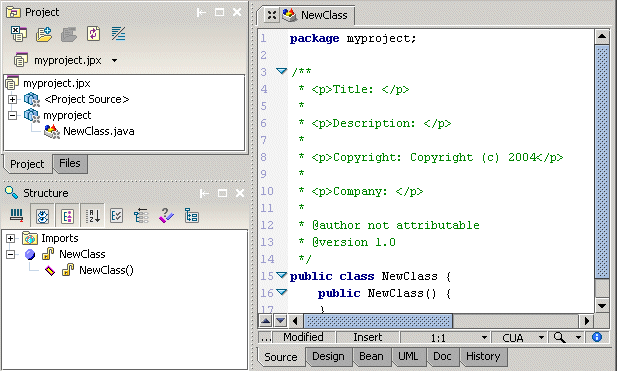

All of the work you do in JBuilder must be done within the context of a project. A JBuilder project is an organizational tool that includes all of your files in your application, the directory structure those files reside in, as well as the paths, settings, and required resources. Each project is administered by a project file, a descriptive file with a .jpx file type.
To create a new project in JBuilder and add a new source file to it, follow these steps:
In the project pane, you'll see the project file and the source file that now belongs to the project.

You can also add a new empty file to the project; choose File|New File, specify the new file name and type, and choose OK.
JBuilder supports JDK switching. Right-click the project file in the project pane and choose Properties. Click the JDK ellipsis (…) button on the Paths page, browse to the version of the JDK you want to use, and choose OK.
JBuilder uses libraries to help find everything it needs to run a project, to browse through source, view Javadoc, use the visual designer, apply CodeInsight, and compile code. Libraries are collections of paths that include classes, source files, and documentation files. Libraries are static, not dynamic. Individual library paths are often contained in JAR or ZIP files but can also be contained in directories. Library configurations are saved in .library files.
You can configure existing libraries and add new ones in the Configure Libraries dialog box (Tools|Configure Libraries), as well as add required libraries to your project on the Paths page of the Project Properties dialog box (Project|Project Properties).
For more information, see:
Building Applications with JBuilder: Creating and managing projects
Building Applications with JBuilder: Setting the JDK
Building Applications with JBuilder: Working with libraries